비트코인과 블록체인(Bitcoin & Blockchain)¶
1절. 비트코인¶
비트코인(Bitcoin) ?¶
- 사토시 나카모토(Satoshi Nakamoto)에 의해 발명된 암호화폐(cryptocurrency)
- 사토시 나카모토에 대한 정보는 존재하지 않음
- 실존 인물인지도 모호함
비트코인의 특징¶
분산화(비중앙화)¶
- 중앙 기관이나 은행 필요 X
- Peer-to-Peer(P2P) 기술 이용
프라이버시¶
- 수도니머스(Pseudonymous)
- 어나니머스(Ananymous)의 반대어로, 가명 시스템을 의미
- 가명을 사용하기에 자금은 실제 세계의 개체가 아닌 비트코인 주소로 알려짐
- 계좌 번호가 생성한 사람의 정보를 알려주진 않음
- 하지만 해당 계좌의 비트코인 수에 대한 정보는 제공
2절. 트랜잭션(Transactions)¶
비트코인 시스템¶
- 지갑 : 사용자들의 키 포함
- 거래 : 네트워크를 통해 전파
- 채굴자 : 경쟁적인 계산을 통해 합의 블록체인을 생성
- 합의 블록체인 : 모든 거래의 권위 있는 원장 역할
디지털 서명과 비트코인 주소(Digital Signature and Bitcoin Address)¶
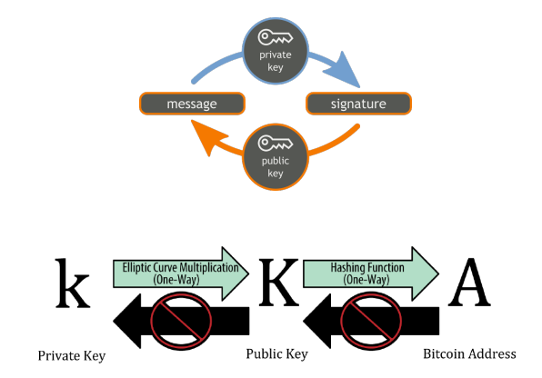
비트코인 키¶
- 공개 키 암호화 사용
- 비트코인에 대한 접근을 제어하는 키 쌍 생성
- 키 쌍 : 개인 키 + 그로부터 파생된 고유한 공개 키 구성
- 공개 키 : 비트코인을 받을 때 사용
- 개인 키 : 비트코인을 사용하기 위해 거래에 서명할 때 사용
개인 키(Private Key)¶
-
거래에서 자금 소유를 증명하는 서명 생성에 사용
-
백업하고 우발적인 손실로부터 보호할 필요 존재
-
개인 키를 잃으면 복구가 불가
-
비트코인 계좌에 보호된 자금 손실
-
비트코인 키 생성 == "1과 \(2^{256}\) 사이의 숫자 선택"
- 비트코인 소프트웨어 : 기본 운영 체제의 난수 생성기로 256비트의 엔트로피(Randomness) 생성
비트코인 주소와 Base 58¶
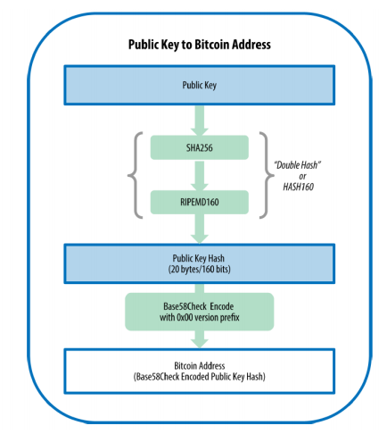
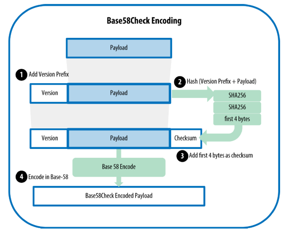
Base 58 인코딩¶
-
Base64의 하위 집합
-
Base64와 마찬가지로 대소문자 알파벳과 숫자를 사용
- 허나, 서로 혼동될 수 있는 문자들을 제외
-
0(숫자), O(대문자), l(소문자), I(대문자), +(기호), /(기호) 제외
-
비트코인에서 사용하기 위해 개발된 텍스트 기반 이진 인코딩 형식
-
다른 암호화폐에서도 사용
-
Base58Check
- 비트코인에서 자주 사용되는 Base58 인코딩 형식
- 내장된 오류 검증 코드가 포함되어 오타나 필사 오류를 방지
비트코인 트랜잭션(Transactions)¶
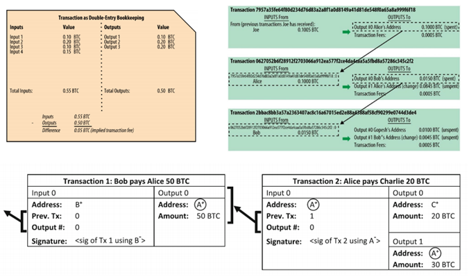
트랜잭션 순환구조¶
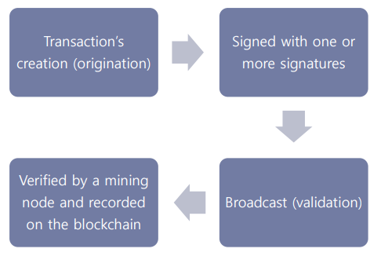
일반적인 트랜잭션 형태¶
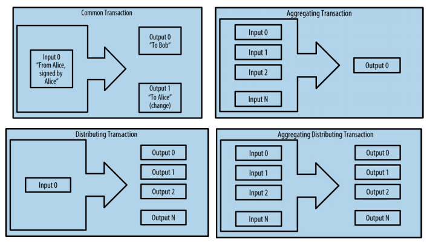
트랜잭션 입-출력¶
- Input
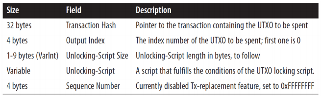
- Output
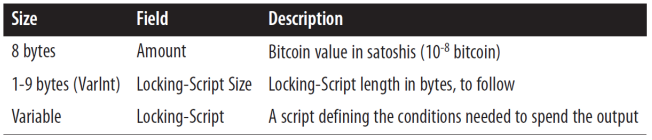
스트립트 구성(Lock + Unlock)¶
- 비트코인의 트랜잭션 검증 엔진 스크립트
- 잠금 스크립트
- 잠금 해제 스크립트
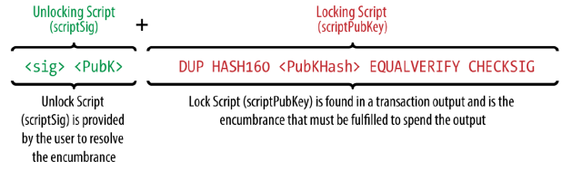
스크립트 언어(Script Language)¶
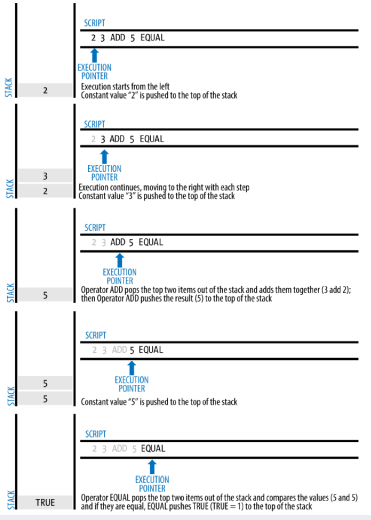
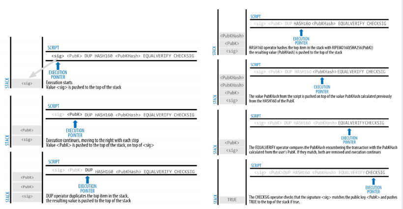
개인 키 저장 방법¶
-
브레인 월렛(Brain Wallet)
-
사용자가 기억하는 암호문구로 키 암호화
-
위변조 방지 장치(Tamperproof Device)
-
장치는 키를 공개하지 않고 서명 대신 수행
-
페이퍼 월렛(Paper Wallet)
-
키를 종이에 출력하여 보관
맞춤형 주소 (Vanity Addresses)¶
- 사람이 읽을 수 있는 메시지를 포함하는 주소
- 예시 : 1LoveBPzzD72PUXLzCkYAtGFYmK5vYNR33
- "1Kids"로 시작하는 맞춤형 주소의 범위
- 시작 : 1Kids11111111111111111111111111111
- 끝 : 1Kidszzzzzzzzzzzzzzzzzzzzzzzzzzzzz
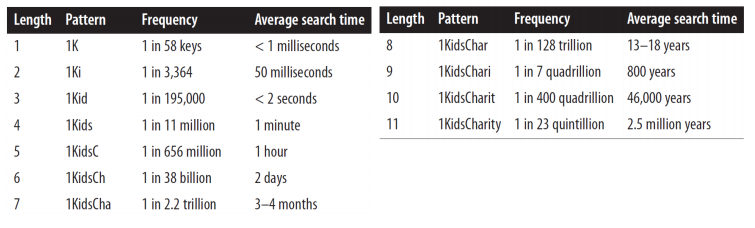
-
맞춤형 풀 (Vanity Pool)
-
맞춤형 마이너 풀에 작업 위임
-
보안
- 보안 조치를 강화하거나 무력화하는 데 사용
- 진정한 양날의 검
3절. 블록체인과 채굴(BlockChain & Mining)¶
비트코인 채굴(Bitcoin Mining)¶
- 트랜잭션은 비트코인 네트워크에 전파되며 채굴을 통해 확인
-
블록에 포함되기 전까지 공유 원장(블록체인)의 일부 X
-
채굴의 두 가지 목적
- 새로운 비트코인을 생성 => 중앙은행의 새 돈 발행
- 해당 블록에 충분한 계산 능력이 투입된 경우만 트랜잭션 확인 보장 => 신뢰 형성
블록체인(Blockchain)¶
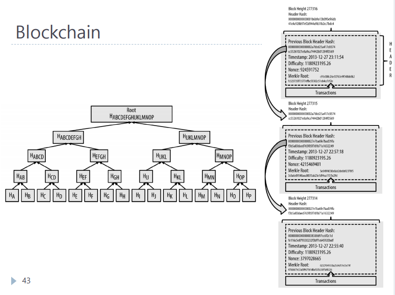
블록 보상(Block Reward)¶
- 블록을 성공적으로 채굴할 경우 받는 비트코인의 수
-
보상 => 50 BTC (2009), …, 3.125 BTC (2024), 1.5625 BTC (2028), 0.78125 BTC (2032), 0.390625 BTC (2036), …
-
목표 : 10분 블록 간격
- 보상은 매 210,000 블록, 즉 약 4년마다 반감
- 총 발행될 비트코인의 양 : 21,000,000 BTC
- 약 2140년경에 0에 도달할 것으로 예상
채굴(Mining)¶
- 작업 증명(Proof of Work)
- 생성하기 어렵고(비용 및 시간 소모) 다른 사람이 검증하기는 쉬움
- 특정 요구 사항을 충족하는 데이터
- 작업 증명 생성은 확률이 낮은 무작위 과정
- 유효한 작업 증명 생성을 위해 평균적으로 많은 시행착오 필요
- 비트코인은 Hashcash 작업 증명 시스템 사용
- 블록이 유효하려면 해당 블록의 해시 값이 현재 목표값보다 작아야 함
- 예 : 0000000000000000029AB900000…0000000000000000
난이도 목표(Difficulty Target)¶
- 난이도 목표와 재조정(Retargeting)
- 블록을 찾는 난이도
- 네트워크 전체가 처리하는 데 약 10분 소요
- 2,016블록(약 2주)마다 조정
- 새로운 목표 = 이전 목표 × (마지막 2,016블록 처리 시간 / 20,160분)
블록체인 포크(Blockchain Forks)¶
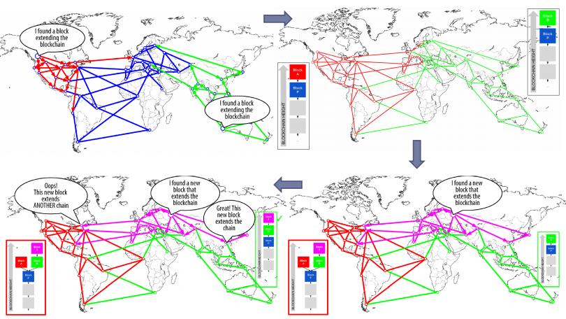
트랜잭션 수수료(Transaction Fees)¶
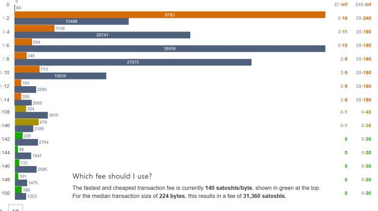
- 입력 값의 합에서 출력 값의 합을 뺀 나머지
- 수수료 = Sum(Inputs) – Sum(Outputs)
- 해당 트랜잭션을 블록체인에 기록하는 블록을 채굴한 마이너가 수집
두 가지 주요 목적¶
- 거래를 다음 블록에 포함/채굴하는 인센티브
- 모든 거래에 소액의 비용을 부과함으로써 "스팸" 거래 또는 시스템 남용을 방지
발행 코인 vs 트랜잭션 수수료(Minted Coins vs Transaction Fee)¶
- 트랜잭션 수수료기 더 중요한 요소
- 현재 블록 보상은 대부분 마이너 수익의 대부분을 차지
- 트랜잭션 수수료가 지배적인 역할
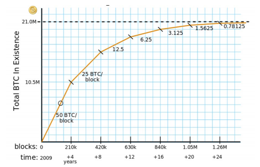
채굴 하드웨어 비교¶
- 가격당 해시와 전기 효율성을 기준 비교
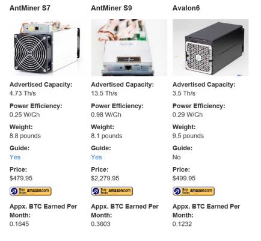
채굴 풀(Mining Pools)¶
-
아이디어
-
근사 유효 블록"을 통한 작업 증명
-
장점(Pros)
-
채굴을 예측 가능하도록 만듦
- 작은 마이너들의 참여할 수 있도록 만듦
-
더 많은 마이너들이 업데이트된 검증 소프트웨어를 사용하도록 유도
-
단점(Cons)
-
중앙화로 이어짐
-
마이너들의 전체 노드 운영을 방해
-
공격(Attacks)
- 51% 공격, 포크 공격, 블랙리스트 및 처벌적 포킹
- 블록 폐기 공격
해시레이트 분포(Hashrate Distribution)¶
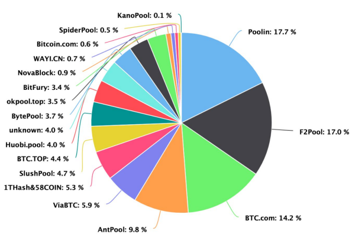
ASIC-저항 퍼즐 (ASIC-Resistant Puzzles)¶
ASIC-저항 (ASIC-resistance)¶
-
비트코인 선언문 : ONE CPU ONE VOTE
-
목표 : 맞춤형 하드웨어를 사용한 채굴 억제 목적
-
현실 : 가장 비용 효율적인 맞춤형 하드웨어와 일반 목적 컴퓨터가 할 수 있는 작업 간의 격차를 줄이는 퍼즐 개발
-
ASIC-저항에 대한 반론 (Arguments against ASIC-resistance)
- SHA-256 채굴 : 네트워크에 가장 큰 안정성 제공
- 많은 수의 ASIC을 사용하는 것보다 일반적인 컴퓨팅 파워를 임시로 대여하는 것이 더 효율적
메모리-하드 퍼즐 (Memory-hard puzzles)¶
- 가장 널리 사용되는 ASIC-저항 퍼즐
-
많은 메모리를 필요로 하는 퍼즐
-
스크립트(Scrypt)
-
라이트코인과 다양한 다른 알트코인에서 이미 사용되고 있는 가장 인기 있는 메모리-하드 퍼즐
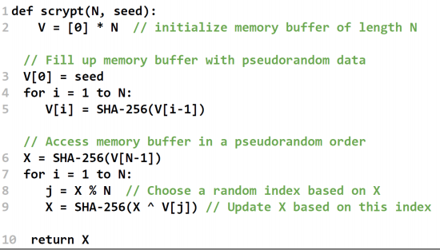
- 현실 응용
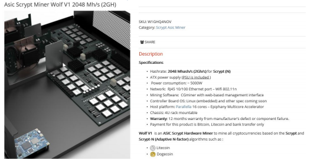
유용한 작업 증명(Proof of “Useful” Work)¶
자원봉사 컴퓨팅 프로젝트 (Volunteer computing project)¶
SETI@home, Folding@home, 등 BOINC (Berkeley Open Infrastructure for Network Computing): 자원봉사자가 자신의 컴퓨터 자원을 제공하여 다양한 과학적 계산을 수행하는 시스템
Primecoin 도전 과제 (Challenge of Primecoin)¶
- Cunningham 체인 (Cunningham chain)을 찾는 것
- \(k\)개의 소수 \(p_1, p_2, ..., p_k\)로 구성
- 각 소수는 \(p_i = 2p_{i-1} + 1\) 만족
- Primecoin의 퍼즐은 Cunningham 체인에서 가장 큰 소수를 찾는 것
- 여러 \(k\) 값에 대해 가장 큰 소수들 생성
- 현재 Cunningham 체인에는 알려진 실용적인 응용 프로그램 없음
비트코인 채굴의 전력 소비 현황¶
- 아일랜드를 포함한 159개국보다 더 많은 전력 소비(2017/11/20)
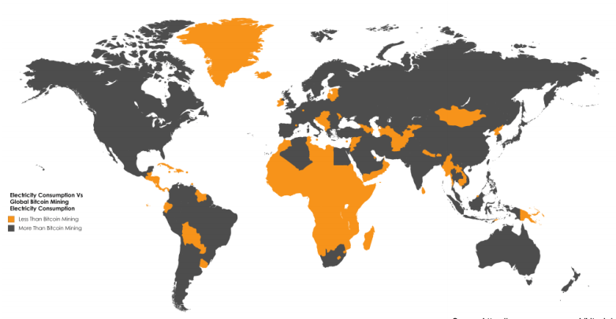
비트코인 채굴과 지속 가능성¶
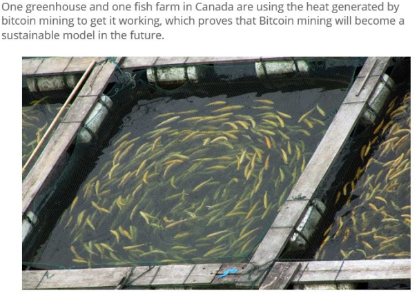
암호화 히터¶
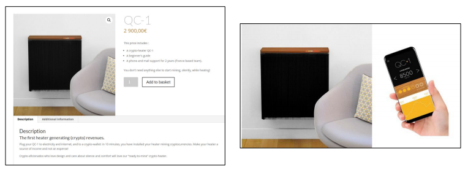
작업 증명과 지분 증명(Proof of Work vs Proof of Stake)¶
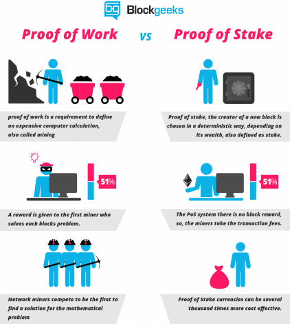
암호화폐(Cryptocurrencies)¶
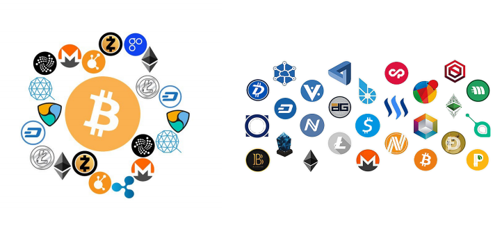
추가 전용 로그(Append-only Log)¶
연결된 타임스탬프¶
- 인증된 데이터 구조(예: 해시 체인)에 얽혀 서로 의존하는 타임스탬프 토큰 생성
- ISO 18014
- ANSI ASC X9.95
- IETF RFC 4998
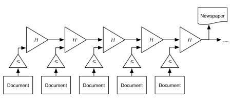
스마트 자산(Smart Property)¶
- 물리적 및 지적 자산은 블록체인에 등록
- 블록체인은 재고, 추적 및 교환 메커니즘
- 컬러 코인은 블록체인 위에서 자산을 표현하고 관리하는 방법의 클래스
스마트 계약(Smart Contact)¶
- 계약 조건을 실행하는 컴퓨터화된 거래 프로토콜
- 일반적인 목표
- 공통 계약 조건 충족
- 악의적이거나 우발적인 예외를 최소화
- 신뢰할 수 있는 중개자의 필요성 최소화
이더리움(Ethereum)¶
- 스마트 계약(스크립팅) 기능을 갖춘 오픈 소스, 공개, 블록체인 기반 분산 컴퓨팅 플랫폼
- 2013년 비탈릭 부테린 작성
- 프로그래밍 언어가 내장된 블록체인
- 합의 기반 전역적으로 실행되는 가상 머신
- 튜링 완전성
- 에테르
- 가스